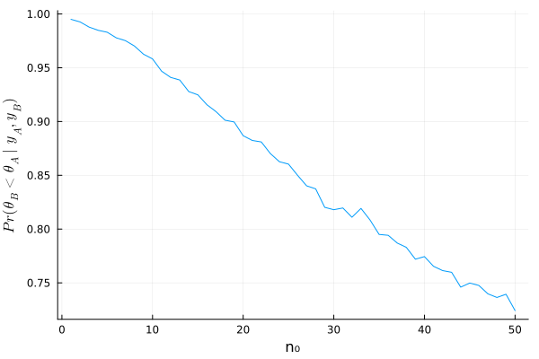
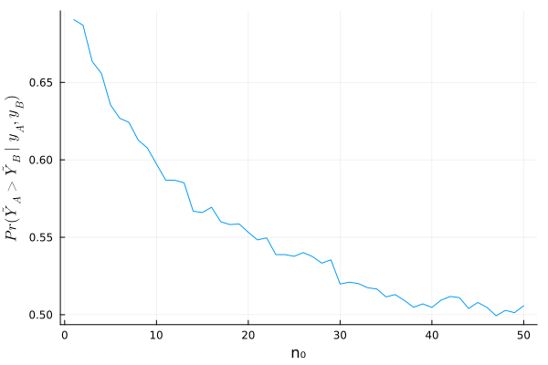

4.2
Answers of exercises on Hoff, A first course in Bayesian statistical methods, Chapter 4
a)
answer
using Distributions using Random Random.seed!(1234) y_A = [12, 9, 12, 14, 13, 13, 15, 8, 15, 6] y_B = [11, 11, 10, 9, 9, 8, 7, 10, 6, 8, 8, 9, 7] n_A, sy_A = length(y_A) , sum(y_A) n_B, sy_B = length(y_B) , sum(y_B) a₀_A = 120 b₀_A = 10 a₀_B = 12 b₀_B = 1 # Posterior distributions dist_A = Gamma(a₀_A + sy_A, 1/(b₀_A + n_A)) dist_B = Gamma(a₀_B + sy_B, 1/(b₀_B + n_B)) θ_A_mc = rand(dist_A, 5000) θ_B_mc = rand(dist_B, 5000) mean(θ_B_mc .< θ_A_mc)
0.996
以上より、 \[ \text{Pr}(\theta_B < \theta_A \mid \boldsymbol{y}_A, \boldsymbol{y}_B) \fallingdotseq 0.997 \]
b)
answer
dist_θ_B = n -> Gamma(a₀_B*n + sy_B, 1/(n + n_B) ) # %% t_mc = [] for n₀ in 1:50 θ_B_mc = rand(dist_θ_B(n₀), 5000) append!(t_mc, mean(θ_B_mc .< θ_A_mc)) end

c)
answer a’
θ_A_mc = rand(dist_A, 10000) θ_B_mc = rand(dist_B, 10000) y_A_mc = rand.(Poisson.(θ_A_mc)) y_B_mc = rand.(Poisson.(θ_B_mc)) mean(y_A_mc .> y_B_mc)
0.6953
以上より、 \[ \text{Pr}(\tilde{Y}_B < \tilde{Y}_A \mid \boldsymbol{y}_A, \boldsymbol{y}_B) \fallingdotseq 0.695 \]
answer b’
t_mc = [] for n₀ in 1:50 θ_B_mc = rand(dist_θ_B(n₀), 10000) y_B_mc = rand.(Poisson.(θ_B_mc)) append!(t_mc, mean(θ_B_mc .< θ_A_mc)) end
